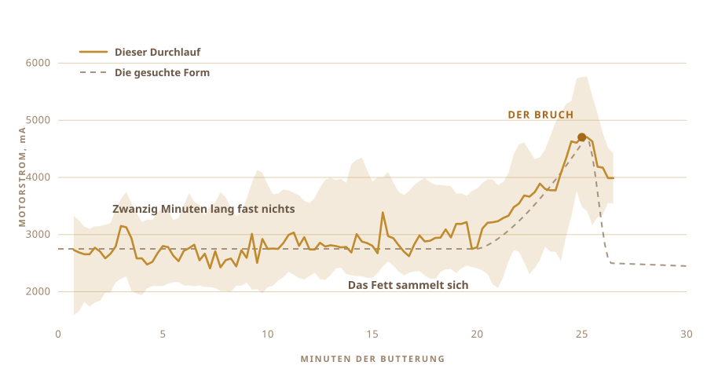

01
Ich hatte es immer nur gegessen
Das Ghee, das ich kenne, kam aus Dörfern. Wiederverwendete Gläser, von Leuten, die es so lange auf dieselbe Weise machen, dass dort niemand es für eine Technik hält.
Es schmeckt nicht wie die Dose aus dem Laden.
Und ich hatte nie eine einzige Charge gemacht. Ich wusste nicht, wie lange die Milch stehen muss, wie kalt der Joghurt sein soll, oder wie der Topf klingt, wenn es so weit ist.
02
Es fängt mit Joghurt an, nicht mit Sahne
Das meiste industrielle Ghee fängt mit Sahne an. Der traditionelle Weg fängt einen Tag früher an, manchmal zwei, mit Sahne, genauer gesagt eingekochter Vollmilch, die zu Joghurt angesetzt wird und über Nacht sauer werden darf.
Dieses Säuern ist entscheidend, denn ohne es bekommt man Butterschmalz. Das ist schön, aber es ist kein Ghee.

03
Zwei Tage auf der Arbeitsfläche
Warme Milch, ein Löffel Joghurt von gestern untergerührt, und dann lässt man alles die ganze Nacht in Ruhe und die Bakterien machen ihre Arbeit. Meinen habe ich zwei Tage stehen lassen.
Das ist Fermentation, und es ist der Schritt, den die kommerzielle Version überspringt. Lebende Kulturen, vor allem Lactobacillus, arbeiten sich durch die Lactose und machen daraus Milchsäure. Die Milch wird dicker. Sie wird sauer. Am Morgen ist sie etwas anderes.
Daher kommt alles Gute. Aufgespaltene Lactose, die leichter im Magen liegt. Fette und Proteine, die besser verfügbar werden. Buttersäure, die kurzkettige Fettsäure, von der die Darmschleimhaut tatsächlich lebt, und davon steckt mehr in so gemachtem Ghee als in Ghee, das aus süßer Sahne zusammengerührt wurde.
Ayurveda verschreibt genau diese Version schon sehr lange.
Was ich sagen kann, ist, dass die Kultur den Geruch macht. Dieser Geruch ist der größte Teil des Grundes, sich überhaupt die Mühe zu machen.

04
Die Methode hat einen Namen
Bilona. Joghurt in einen Topf, einen hölzernen Quirl hinein, und dann bewegt man ihn hin und her, bis die Butter aufgibt und aufsteigt.
Den Quirl habe ich selbst gebaut. Die, die ich online fand, waren verklebt, und keiner wollte mir sagen, was für ein Kleber das war. So ein Ding steckt eine halbe Stunde im Essen, da wollte ich nicht raten. Hartholz, Edelstahlschrauben, auf eine Rührerwelle geschraubt, die ich schon in einer Schublade hatte.
Vier Arme und ein Stahlband, das sie im Winkel hält. Alles geschraubt, also geht es auch wieder auseinander.


Es dauert etwa eine halbe Stunde, und die meiste Zeit davon passiert nichts Interessantes. Also genau die Art von Arbeit, von der man träumt, sie abzugeben.

05
Also habe ich gefragt
Die Leute, die das wirklich können, arbeiten nicht nach Rezepten, und keiner von ihnen stand in meiner Küche. Also gingen die Fragen stattdessen in ein Chatfenster.
Wie lange ansetzen. Wie kalt der Joghurt bleiben muss. Wie schnell man drehen darf, bevor die Reibung den Topf erwärmt und die Butter verdirbt. Jede Antwort öffnete drei weitere.
Dann stellte ich die Frage, die ich eigentlich meinte. Könntest du es einfach machen?
Die Frage war nicht mehr, wie mache ich Ghee. Sie war, könntest du es für mich machen.
06
Das Biest
Ein Akkuschrauber. Der Quirl aus einer Schublade und dem Baumarkt. Eine Frischhaltedose für die Elektronik, ein Schneidebrett als Rückgrat, und ein großer gelber Stoppknopf, weil alles mit einem Motor einen haben sollte.
Es hat fast nichts gekostet und sieht auch so aus. Und das ist irgendwie der Punkt.

- MotorAkkuschrauber, in einer Klemme gehalten
- QuirlHartholz und Edelstahl, gebaut statt gekauft
- HirnRaspberry Pi, zeichnet einmal pro Sekunde auf
- SinnMotorstrom beim Buttern, ein Temperaturfühler beim Kochen
- StoppEin großer Knopf, fest verdrahtet, trennt den Strom
07
Drehen ist der leichte Teil
Joghurt drehen kann jeder. Das Schwierige ist zu wissen, wann man aufhören muss.
Hört man zu früh auf, hat man dicken Schaum. Macht man zu lange weiter, schlägt man die Butter zurück in die Buttermilch und verliert sie. Das Fenster verschiebt sich, je nach Fett, Temperatur und wie der Tag so läuft.
Niemand nimmt dafür die Uhr. Man hört hin. Das Schwappen geht von einem gleichmäßigen Wirbeln in ein ungleichmäßiges Klatschen über, und dann greift man hinein.

08
Ein Sinn, und nur einer
Also habe ich ihr einen Sinn gegeben. Sie beobachtet, wie stark der Motor zieht.
Zwanzig Minuten lang nichts. Die Last liegt bei etwa 2700 mA und wandert ein wenig umher. Dann sammelt sich das Fett und der Akkuschrauber muss sich durch etwas Dickeres schieben. Die Last steigt auf 4700 und hält dort einen Moment, und dann lässt die Butter die Flüssigkeit los und die Last fällt ab.
Keine Kamera, kein Modell, nichts Raffiniertes. Eine Zahl, die steigt und dann fällt.

09
Sie hat von selbst angehalten
Sie lief. Ich ging etwas anderes machen, und als ich zurückkam, hatte sie sich selbst abgeschaltet.
Blassgelbe Butterkörner in trüber Buttermilch. Niemand hat ihr die Zeit gesagt. Sie hat das aus dem Einzigen herausgelesen, was sie fühlen konnte.

10
Dann sind wieder Hände dran
Die Körner zusammensammeln und zu einer Kugel drücken. In kaltem Wasser waschen, immer wieder, bis das Wasser nicht mehr trüb abläuft.
Jeder Tropfen Buttermilch, den man übrig lässt, verbrennt im nächsten Schritt. Diesen Teil habe ich nicht automatisiert, und ich wollte es auch nicht.


11
Der zweite Sinn
Die Motorlast sagte dem Aufbau, wann er aufhören soll. Das Kochen ist ein anderes Problem, denn jetzt sucht man keinen Moment, sondern versucht einen zu halten.
Der Topf geht also auf eine Kochplatte, mit einem Temperaturfühler darin und einem Leistungsregler, der die Platte ein- und ausschaltet, damit die Zahl dort bleibt, wo man sie hingesetzt hat. Ich habe 250 F eingestellt, umgerechnet 121 °C, und dort blieb sie etwa eine Stunde lang.
Ein Mensch, der eine Stunde lang einen Topf bewacht, wird unaufmerksam. Dem Regler wird nicht langweilig.

12
Eine Stunde lang der Farbe zusehen
Butter in den Topf, und dann läuft es meistens von allein.
Sie schmilzt. Sie schäumt weiß und laut. Das Wasser kocht weg und das Geräusch verliert sich. Die Milchfeststoffe sinken ab und werden braun, und der Geruch wandert von Butter zu etwas Geröstetem. Wenn der Topf still wird und die Flüssigkeit klar läuft, ist es fertig.
Ich habe trotzdem fast alles davon angeschaut, weil es schön ist, dabei zuzusehen. Aber nichts, was ich tat, hat am Ergebnis etwas geändert.


13
Ghee
Klar, bernsteinfarben, und es riecht wie die Gläser, aus denen ich als Kind gegessen habe. Das war der einzige Test, den ich hatte, und er ist bestanden.

Es kam warm und klar in die Gläser. Am nächsten Tag war es blass und körnig fest geworden.
Ich habe ein Etikett draufgeklebt. Das Wort darauf ist Nepali für Ghee, und der Code daneben bringt einen zurück auf diese Seite.

Die erste Charge, die ich je gemacht habe. Gemacht habe ich sie eigentlich nicht.
14
Neun Gläser beim zweiten Mal
Der erste Durchlauf ergab zwei Gläser, und das war alles. Dieser hier hat das Geländer gefüllt.
Neun Gläser. Zwei hohe Schraubgläser vorn an der Kamera, sechs Bügelgläser in der Mitte, und ein kleines ganz hinten am letzten Pfosten.

Das Etikett ist jetzt anders. Die ersten zwei Gläser trugen eines aus rosa Papier, mit OUR STORY oben darüber gedruckt. Diese hier sind aus klarer Folie, das Ghee scheint also hinter der Schrift durch, und der Code daneben führt weiterhin zurück auf diese Seite.


Es wurde im selben blassen Gelb fest wie die erste Partie, was ich nicht sicher erwartet hatte.
15
Was ich als Nächstes will
Im Moment weiß die Maschine zwei Dinge. Wann sie mit dem Buttern aufhören muss, und welche Temperatur sie halten soll.
Als Nächstes will ich ihr Augen und Ohren geben. Eine Kamera, damit sie den Schaum zusammenfallen und die Feststoffe braun werden sieht und die Hitze selbst wählt, statt eine Zahl zu halten, die ich ihr vorgegeben habe. Und ein Mikrofon, weil ein großer Teil davon, woran man fertiges Ghee erkennt, der still werdende Topf ist.
Der Akkuschrauber könnte wahrscheinlich auch eine zweite Schicht übernehmen. Sobald die Butter im Topf ist, will sie gerührt werden, und da steht schon ein Motor herum und tut nichts.
Dann die Schleife. Die Ansetzzeit ändern, die Geschwindigkeit ändern, probieren was herauskommt, behalten was funktioniert hat, und noch einmal von vorn. Dreißig Durchläufe, und sie landet irgendwo, wo ich nie nachgesehen hätte.
Ich wusste sowieso nie so richtig, wo ich nachsehen soll.
Woraus sie besteht, wo gemessen wird, und was der Aufbau wirklich beobachtet.